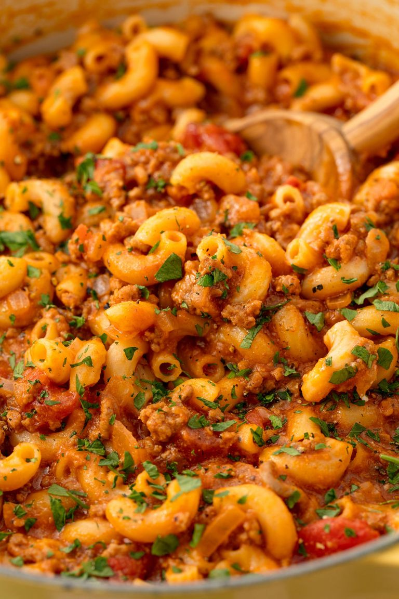

How to Make Goulash
Ingredients
- 2 tbsp. extra-virgin olive oil
- 1 medium yellow onion, chopped
- 2 cloves garlic, minced
- 1 lb. ground beef
- Kosher salt
- Freshly ground black pepper
- 1 tbsp. tomato paste
- 1 1/4 c. low-sodium beef broth
- 1 (15-oz.) can tomato sauce
- 1 (15-oz.) can diced tomatoes
- 1 tsp. Italian seasoning
- 1 tsp. paprika
- 1 1/2 c. elbow macaroni, uncooked
- 1 c. shredded cheddar
- Freshly chopped parsley, for garnish
Directions
- STEP 1: In a large skillet over medium heat, heat oil. Add onion and cook until soft, about 5 minutes.
Add garlic and cook until fragrant, about 1 minute more.
- STEP 2: Add ground beef and cook until no longer pink, about 6 minutes. Drain fat and return to pan.
Season with salt and pepper.
- STEP 3: Add tomato paste and stir to coat, then pour in broth, tomato sauce, and diced tomatoes.
Season with Italian seasoning and paprika, and stir in macaroni. Bring to a simmer and cook, stirring occasionally, until pasta is tender, about 15 minutes.
- STEP 4: Stir in cheese and remove from heat.
- STEP 5: Garnish with parsley before serving.

Contact Me
If you have any questions, please concact me here:
Austin Cook
32 Camous Dr
Missoula, MT 59812
austin.cook@umconnect.umt.edu
Here is a link to the original recipe